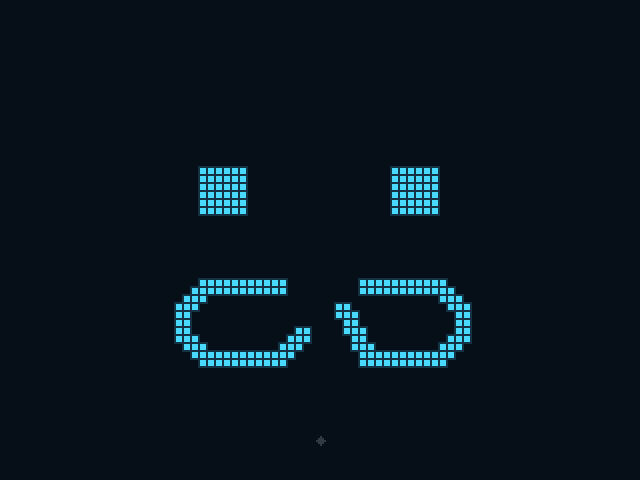
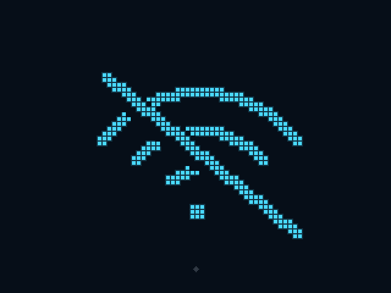
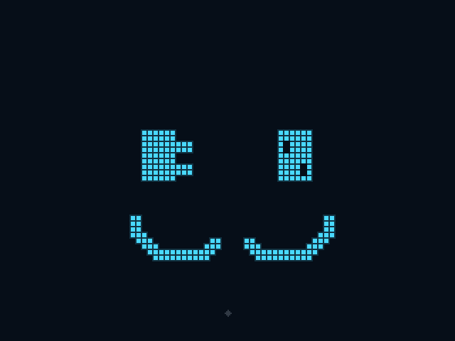

离线图标 · 三种候选
沿用深蓝底、青蓝发光点阵、4 px 间距。此页保留三种未采用的历史候选；最终采用青蓝叉眼笑脸，见当前七态预览。

01 · 断链表情
方眼配合断开的链环嘴，保留机器人的脸部表情。

02 · 无线断开
整屏显示带斜线的 Wi-Fi 符号，直接表达网络连接中断。

03 · 插头插座脸
插头和插座化为双眼，下方断开的线缆作为嘴巴。
屏幕原始尺寸 320×240；图片为整数 2 倍放大，保持点阵形状。
返回当前七态预览